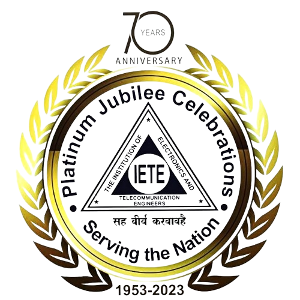
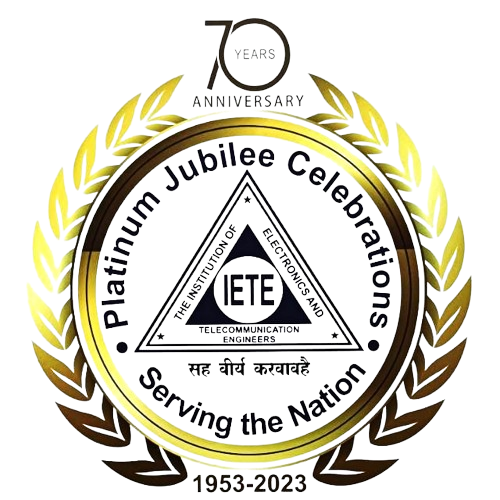

Make-a-thon 5.0
Innovate · Elevate · Collaborate
Make-a-thon 5.0
Innovate · Elevate · Collaborate
Abstract Submission ends in
00
Days00
Hours00
Minutes00
SecondsRegister here for Make-a-thon 5.0
 


Make-a-Thon is the flagship event of the Electronics and Communication Engineering department of Sri Venkateswara College of Engineering. It serves as a platform for the participants to showcase their talents and expertise in project development and deepen their problem-solving skills. After the successful events of Make-o-thon 1.0,2.0,3.0 and 4.0 the Electronics and Communication Engineers Association, The Institution of Electronics and Telecommunication Engineers Student Forum & Robotics and Artificial Intelligence Club are all set to conduct the “Make-a-Thon 5.0” as an inter-collegiate event. This event serves as an opportunity for the students to upskill themselves on recent technologies.
Save the dates
Abstract format for Make-a-Thon 5.0